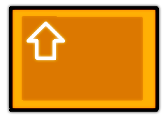

Posahdus on joku videopeli, jonka olen joskus jostain syystä tehnyt Construct 2 -ohjelmalla.
Voit pelata sitä tuosta napista.
WASD- ja nuolinäppäimet molemmat toimivat, mutta tartuntanäppäimen sijainti shiftissä
tekee WASDista hieman käytännöllisemmän. Tosin jos näppäimistöstäsi löytyy
numeronäppäimet, voit käyttää Inserttiä shiftin sijaan.

Hakbut (hakkubumerangit) ovat hyödyllisiä silloin, kun olet vaarassa jäädä maan alle. Heitä hakbu
oikealle tai vasemmalle painamalla Q-näppäintä hajottaaksesi muutaman blokin edestäsi.
 Voit zoomata pelinäkymästä kauemmaksi ö -näppäimellä, ja zoomata takaisin ä -näppäimellä.
Whufdididkepillä on kaksi ominaisuutta: kappaleiden työntäminen tieltä ja pienten
blokkien hävittäminen. Välilyönnistä haravan hakat tulevat esiin pyöräytyksen ajaksi,
jonka aikana keppi on fyysinen.
Voit zoomata pelinäkymästä kauemmaksi ö -näppäimellä, ja zoomata takaisin ä -näppäimellä.
Whufdididkepillä on kaksi ominaisuutta: kappaleiden työntäminen tieltä ja pienten
blokkien hävittäminen. Välilyönnistä haravan hakat tulevat esiin pyöräytyksen ajaksi,
jonka aikana keppi on fyysinen.
 Propellihatulla pystyy hidastamaan pudotusta, pidä vain hyppynappia pohjassa.
Tuplahypyllä teet hienon voltin ilmassa painamalla hyppynappia uudelleen ilmassa.
Voltti luonnollisesti nostaa sinua entistä korkeammalle.
Propellihatulla pystyy hidastamaan pudotusta, pidä vain hyppynappia pohjassa.
Tuplahypyllä teet hienon voltin ilmassa painamalla hyppynappia uudelleen ilmassa.
Voltti luonnollisesti nostaa sinua entistä korkeammalle.
Jalometallit ja muut keräiltävät asiat
Jalometallit ovat kaikista tärkein asia tälle olennolle, sillä
hän on niin ahne, että kuolee jos ei saa niitä tarpeeksi
lyhyellä aikavälillä. Keräiltävänä on kultaa, katinkultaa,
smaragdeja ja timantteja, jotka täyttävät hänen rahanhimoaan
riippuen niiden arvokkuudesta. Esiintyvyys vaihtelee eri
kerroksissa.
| Jalometalli |
Nimi |
Arvo |
Esiintyvyys: |
Ruoho |
Multa |
Kallio |
Lumi |
Hiekka |
|
Katinkulta |
1 |
-> |
5% |
6.67% |
7.69% |
3.33% |
4% |
|
Kultahippu |
2-4 |
-> |
1.67% |
2.22% |
2.5% |
1.11% |
1.33% |
|
Kultakimpale |
4-7 |
-> |
0.56% |
0.74% |
0.83% |
0.37% |
0.44% |
|
Smaragdi |
9-13 |
-> |
- |
- |
0.3% |
0.3% |
0.3% |
|
Timantti |
32-37 |
-> |
- |
0.06% |
0.1% |
0.1% |
0.1% |
Esiintyvyysprosentti: tarkoittaa millä todennäköisyydellä yhdestä jaettamattomasta
blokista irtoaa tietty kappale. Esimerkiksi katinkultaa löytyy aina yksi
kahdestakymmenestä pienestä ruohoblokista, jolloin esiintyvyysprosentti on tuo 5.
Ruusut eivät tee mitään muuta kuin vaihtavat pelaajan väriä.
Hieman harvinaisempi kuin timantti.
Rotat kutistavat pelaajan hetkellisesti. Esiintyy vaihtelevasti lumikerrokseen asti.
Lumen seasta voi joskus löytyä yksittäinen hakbu.
Kilpiä esiintyy jokaisessa pelissä ainoastaan kerran, kalliokerroksen luolasta.
Suojaa pelaajaa yhdeltä kuolettavalta iskulta.
Tien raivaaja päätyy helposti myös kohtaloksesi. Jos olet pommin vieressä
ajastimen lyödessä nollaa ilman kilpeä, olet kuollut.
 Lokki syöksyy puukon kanssa luoksesi, jos olet liian lähellä sitä.
Älä kysy, miksi ne näyttävät samalla rauhanmerkkiä.
Hämähäkit jättävät seittiä kentälle. Pelaaja jää hetkeksi jumiin seittiin,
jos joutuu siihen.
Heinäörmelöt pystyvät heittämään keihäitä, jotka
kaartavat pelaajaa päin. Keihäs lamauttaa ja sokeuttaa pelaajan kahdeksi sekunniksi.
Pyramidit vapauttavat kentälle käärmeitä, jotka yhdellä puraisulla vievät
pelaajalta 25% ahneutta.
Lokki syöksyy puukon kanssa luoksesi, jos olet liian lähellä sitä.
Älä kysy, miksi ne näyttävät samalla rauhanmerkkiä.
Hämähäkit jättävät seittiä kentälle. Pelaaja jää hetkeksi jumiin seittiin,
jos joutuu siihen.
Heinäörmelöt pystyvät heittämään keihäitä, jotka
kaartavat pelaajaa päin. Keihäs lamauttaa ja sokeuttaa pelaajan kahdeksi sekunniksi.
Pyramidit vapauttavat kentälle käärmeitä, jotka yhdellä puraisulla vievät
pelaajalta 25% ahneutta.